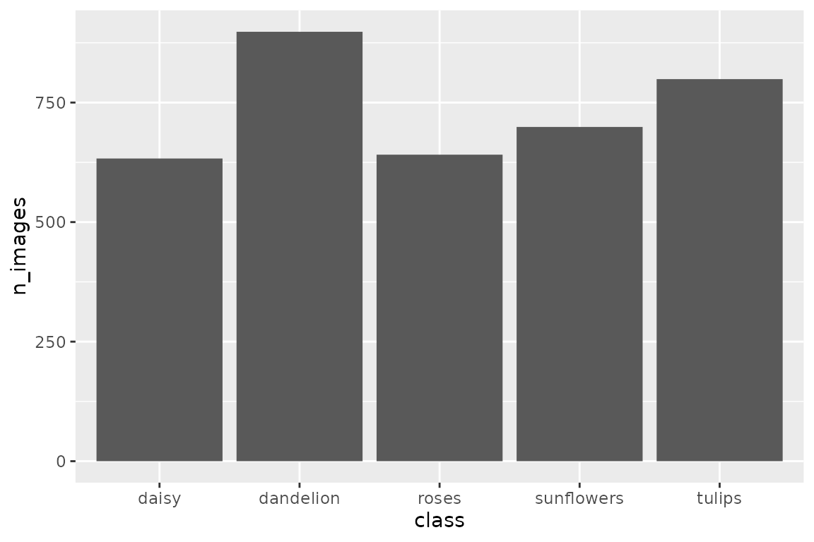
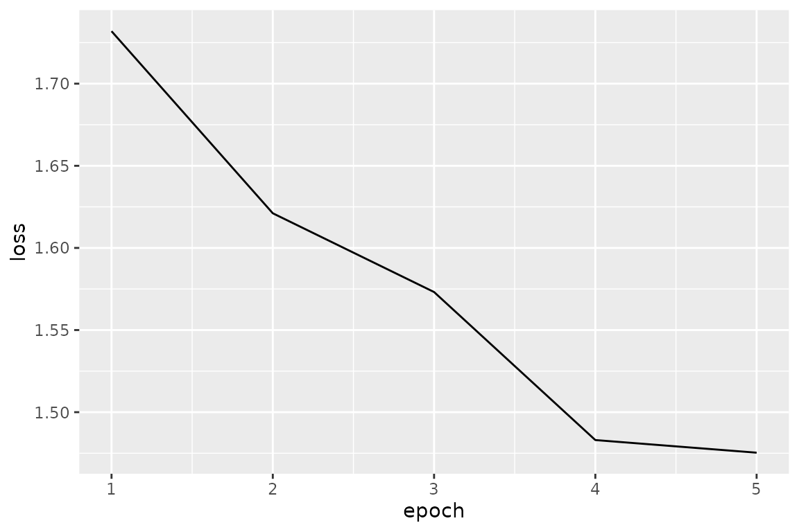
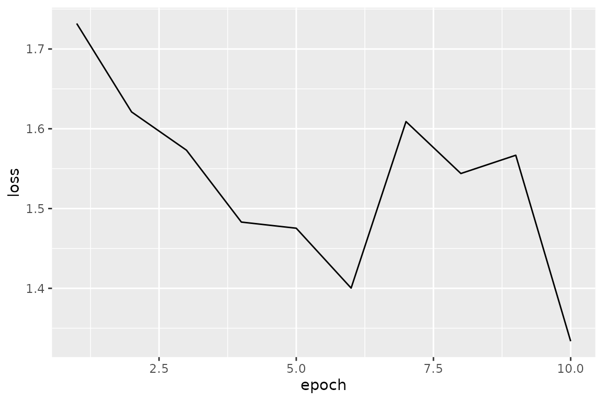
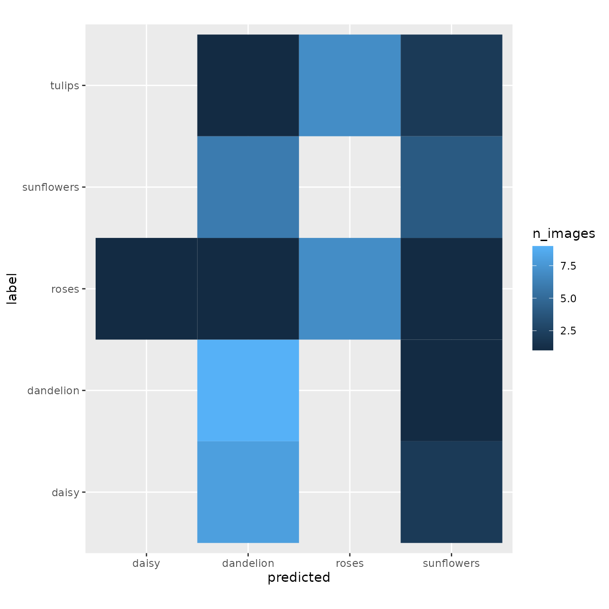

卷积神经网络（Convolutional neural network; CNN）是用于物体识别的深度神经网络架构之一。使用传统的机器学习算法来识别图像中的物体时，需要我们自己指定物体的特征，比如颜色、大小、长宽比例等。相比之下，CNN 可以通过学习大量的图像，从中自动提取物体的特征。 因此，使用 CNN 搭建物体识别模型时，只需收集大量的图像，而无需开发新的算法来提取特征。如今，这种简单易行的方法在许多研究领域备受欢迎。在本次研讨会上，我们将学习如何使用 torch 来搭建 CNN 模型进行图像识别。
本次研习会上，我们主要使用 Torch (PBC 2021) 以及 coro (Henry 2021) 进行深度学习，使用 jpeg 读取图像，并使用 tidyverse 进行可视化。
install.packages('jpeg')
install.packages('tidyverse')
install.packages('coro')
install.packages('torch')
library('torch')
install_torch(timeout = 1200)重启 R，然后将 R 包加载。
在本次研讨会上，我们使用在 TensorFlow Datasets 网站上公开的一个叫做 tf_flower 图像数据集来搭建一个物体识别的深度学习模型。为了方便操作，我们使用以下代码来下载以及整理数据。
if (!file.exists('flower_photos')) {
unlink("train_photos", recursive=TRUE)
unlink("train_photos_train", recursive=TRUE)
unlink("train_photos_valid", recursive=TRUE)
tf_flowers <- 'https://storage.googleapis.com/download.tensorflow.org/example_images/flower_photos.tgz'
download.file(tf_flowers, destfile = 'flower_photos.tgz')
untar('flower_photos.tgz')
list.files('flower_photos', recursive = FALSE)
file.remove('flower_photos/LICENSE.txt')
head(list.files('flower_photos/sunflowers', recursive = FALSE))
}
#> [1] "1008566138_6927679c8a.jpg" "1022552002_2b93faf9e7_n.jpg"
#> [3] "1022552036_67d33d5bd8_n.jpg" "10386503264_e05387e1f7_m.jpg"
#> [5] "10386522775_4f8c616999_m.jpg" "10386525005_fd0b7d6c55_n.jpg"在这里，我们需大致的了解一下这套数据的构造，比方说这套数据包含着多少个类别，每个类别里有多少张图片。这些信息会在搭建模型或训练模型时用到
train_images <- list()
for (class in list.files('flower_photos', recursive = FALSE)) {
train_images[[class]] <- sort(list.files(file.path('flower_photos', class), recursive = TRUE))
}
data.frame(class = names(train_images),
n_images = sapply(train_images, length)) %>%
ggplot(aes(x = class, y = n_images)) +
geom_bar(stat = 'identity')
从运行结果中，我们可以看到这套数据一共有五个类别。每个类别都包含着 600 张以上的图像，其中 dandelion 和 daisy 类中的图像数量的差距还是有点大。一般讲在训练模型时，最理想的情况下是需要保证每个类别中的样本数相似。因此，当我们使用类别间样本数的差距比较大的数据时，我们需要调整每个类别中的样本量。比较简单的方案有以下两种。
在这里，为了节省时间，我们在每个类别里挑选 20 张图像作为训练集用于训练模型。另外，我们还在每个类别里挑选了 10 张图像作为验证集用于验证模型的性能。
n_train_images <- 20
n_valid_images <- 10
class_labels <- c('dandelion', 'sunflowers', 'roses', 'tulips', 'daisy')
dir.create('flower_photos_train', showWarnings = FALSE)
dir.create('flower_photos_valid', showWarnings = FALSE)
for (class in names(train_images)) {
if (class %in% class_labels) {
dir.create(file.path('flower_photos_train', class), showWarnings = FALSE)
dir.create(file.path('flower_photos_valid', class), showWarnings = FALSE)
for (i in 1:length(train_images[[class]])) {
if (i <= n_train_images) {
file.copy(file.path('flower_photos', class, train_images[[class]][i]),
file.path('flower_photos_train', class, train_images[[class]][i]))
} else if (n_train_images < i && i <= n_train_images + n_valid_images) {
file.copy(file.path('flower_photos', class, train_images[[class]][i]),
file.path('flower_photos_valid', class, train_images[[class]][i]))
}
}
}
}待我们整理好训练集以及验证集之后，我们分别为这两组数据集定义一个预处理的流程。
train_transforms <- function(img) {
img <- transform_to_tensor(img)
img <- transform_resize(img, size = c(512, 512))
img <- transform_random_resized_crop(img, size = c(224, 224))
img <- transform_color_jitter(img)
img <- transform_random_horizontal_flip(img)
img <- transform_normalize(img, mean = c(0.485, 0.456, 0.406), std = c(0.229, 0.224, 0.225))
img
}
valid_transforms <- function(img) {
img <- transform_to_tensor(img)
img <- transform_resize(img, size = c(256, 256))
img <- transform_center_crop(img, 224)
img <- transform_normalize(img, mean = c(0.485, 0.456, 0.406), std = c(0.229, 0.224, 0.225))
img
}下一步我们将整理好的训练集的路径赋予给 image_folder_dataset 函数，让其从中自动获取分组信息，图片信息，以及对每个图片做好预处理的准备。随后我们将 image_folder_dataset 输出的对象赋予给 dataloader，让其准备归纳图片准备带入到模型中训练。
dataset_train <- image_folder_dataset('flower_photos_train', transform = train_transforms)
dataset_train$classes
#> [1] "daisy" "dandelion" "roses" "sunflowers" "tulips"
dataloader_train <- dataloader(dataset_train, batch_size = 2, shuffle = TRUE)使用 torch 包创建深度学习模型时，须按照 torch 的规定，先设计一个神经网络的框架模版，然后利用其模版生成一个模型实例。 在这里我们设计一个接收一张图片然后输出 length(dataset_train$classes) 个数值的神经网络框架。 其框架由两个部分构成。第一个组件是有卷积层与池化层构成，主要用于提取图像中的特征量。第二个组件由三层全连接层构成，用于使用特征量来识别图中的物体。由于第一个组件的输出结果是矩阵，而第二个组件的输入形式是向量，我们还需要在两者中间转换数据形式。
以下是我们定义一个名为 SimpleCNN 的神经网络的框架模型的代码。initialize 函数来定义组件，随后用 forward 函数把每个组件按顺序连接起来。
SimpleCNN <- nn_module(
"SimpleCNN",
initialize = function(n_classes) {
self$conv1 <- nn_conv2d(3, 16, 5)
self$pool1 <- nn_max_pool2d(2, 2)
self$conv2 <- nn_conv2d(16, 32, 5)
self$pool2 <- nn_max_pool2d(2, 2)
n_inputs <- (((((224 - 5 + 1) / 2) - 5 + 1) / 2) ^ 2)* 32
self$fc1 <- nn_linear(in_features = n_inputs, out_features = 512)
self$fc2 <- nn_linear(in_features = 512, out_features = 64)
self$fc3 <- nn_linear(in_features = 64, out_features = n_classes)
},
forward = function(x) {
x <- self$conv1(x)
x <- nnf_relu(x)
x <- self$pool1(x)
x <- self$conv2(x)
x <- nnf_relu(x)
x <- self$pool2(x)
# convert a matrix to a vector
x <- torch_flatten(x, start_dim = 2)
x <- self$fc1(x)
x <- nnf_relu(x)
x <- self$fc2(x)
x <- nnf_relu(x)
x <- self$fc3(x)
x
}
)下一步我们将利用 SimpleCNN 模版生成一个模型实例 model，然后对这个实例 model 进行训练以及验证。
model <- SimpleCNN(length(dataset_train$classes))在开始训练模型之前，我们需要制定一些训练参数，即损失函数以及优化算法。我们的目的是要做物体识别。因此，在这里我们将采用最常用的交叉熵作为训练时的损失函数。另外，我们将采用 Adam 算法来优化模型。Adam 优化算法是很常用的算法之一并适用于大多是场合。
criterion <- nn_cross_entropy_loss()
optimizer <- optim_adam(model$parameters)接下来，我们将准备好的数据集和模型传送到 CPU 或 GPU 上进行模型训练。在这里，我们借助 for 循环使用同样的训练集反复训练模型 5 次（epoch）。在每次 epoch 训练中，我们将 dataloader 定义后的训练集赋予给模型进行训练。
model$to(device = 'cpu')
model$train()
loss_train <- c()
for (epoch in 1:5) {
loss_running <- 0
n_train_samples <- 0
coro::loop(for (b in dataloader_train) {
optimizer$zero_grad()
output <- model(b$x$to(device = 'cpu'))
loss <- criterion(output, b$y$to(device = 'cpu'))
loss$backward()
optimizer$step()
loss_running <- loss_running + loss$item() * nrow(b$x)
n_train_samples <- n_train_samples + nrow(b$x)
})
loss_train <- c(loss_train, loss_running / n_train_samples)
cat(sprintf("epoch %d loss: %3f\n", epoch, loss_running / n_train_samples))
}
#> epoch 1 loss: 1.731946
#> epoch 2 loss: 1.621100
#> epoch 3 loss: 1.573147
#> epoch 4 loss: 1.483027
#> epoch 5 loss: 1.475343我们可以看到随着迭代次数的增加，误差也在逐渐下降。
data.frame(epoch = 1:length(loss_train), loss = loss_train) %>%
ggplot(aes(x = epoch, y = loss)) +
geom_line()
为了完善模型提高其性能，我们可以再多训练几次模型。在这里，让我们多训练 5 次模型。
model$train()
for (epoch in 6:10) {
loss_running <- 0
n_train_samples <- 0
coro::loop(for (b in dataloader_train) {
optimizer$zero_grad()
output <- model(b$x$to(device = 'cpu'))
loss <- criterion(output, b$y$to(device = 'cpu'))
loss$backward()
optimizer$step()
loss_running <- loss_running + loss$item() * nrow(b$x)
n_train_samples <- n_train_samples + nrow(b$x)
})
loss_train <- c(loss_train, loss_running / n_train_samples)
cat(sprintf("epoch %d loss: %3f\n", epoch, loss_running / n_train_samples))
}
#> epoch 6 loss: 1.400292
#> epoch 7 loss: 1.609004
#> epoch 8 loss: 1.543911
#> epoch 9 loss: 1.566820
#> epoch 10 loss: 1.333689
data.frame(epoch = 1:length(loss_train), loss = loss_train) %>%
ggplot(aes(x = epoch, y = loss)) +
geom_line()
如今有很多著名的 CNN 框架用于物体识别。这些著名的框架都已被安装在 torch/torchvision 包中。因此用户可以随时从 torch/torchvision 中调用，无需自己定义。下面是一个加载 ResNet 框架，并对网络进行训练的例子。由于 ResNet 包含大量的参数，想必我们自己定义的 SimpleNet，它需要更多的训练时间。
model <- model_resnet18(pretrained = TRUE)
num_features <- model$fc$in_features
model$fc <- nn_linear(in_features = num_features, out_features = length(dataset_train$classes))
criterion <- nn_cross_entropy_loss()
optimizer <- optim_sgd(model$parameters, lr = 0.1)
loss_train <- c()
for (epoch in 1:10) {
loss_running <- 0
n_train_samples <- 0
coro::loop(for (b in dataloader_train) {
optimizer$zero_grad()
output <- model(b$x$to(device = 'cpu'))
loss <- criterion(output, b$y$to(device = 'cpu'))
loss$backward()
optimizer$step()
loss_running <- loss_running + loss$item() * nrow(b$x)
n_train_samples <- n_train_samples + nrow(b$x)
})
loss_train <- c(loss_train, loss_running / n_train_samples)
cat(sprintf("epoch %d loss: %3f\n", epoch, loss_running / n_train_samples))
}
data.frame(epoch = 1:length(loss_train), loss = loss_train) %>%
ggplot(aes(x = epoch, y = loss)) +
geom_line()完成模型训练之后，我们将导入验证集来评估模型的性能。验证的过程与训练的过程相同：（i）对图像做预处理数据集并创建 dataloader，（ii）将 dastaloader 分配给模型。
dataset_valid <- image_folder_dataset('flower_photos_valid', transform = valid_transforms)
dataset_valid$classes
#> [1] "daisy" "dandelion" "roses" "sunflowers" "tulips"
dataloader_valid <- dataloader(dataset_valid, batch_size = 2)导入验证集之后，我们可以用与训练模型同样的方法来评估模型。在评估过程中，将模型的切换至评估模式（eval）可以提高计算速度。
model$eval()
y_true <- c()
y_pred <- c()
loss_valid <- 0
n_valid_samples <- 0
coro::loop(for (b in dataloader_valid) {
output <- model(b$x$to(device = 'cpu'))
output_class_id <- torch_argmax(output, dim=2)
y_true <- c(y_true, as.numeric(b$y))
y_pred <- c(y_pred, as.numeric(output_class_id))
loss <- criterion(output, b$y$to(device = 'cpu'))
loss_valid <- loss_valid + loss$item() * nrow(b$x)
n_valid_samples <- n_valid_samples + nrow(b$x)
})
loss_valid <- loss_valid / n_valid_samples
acc_valid <- sum(y_true == y_pred) / n_valid_samples
acc_valid
#> [1] 0.4验证完毕后，我们绘制一个热图，来看看分类性能。
y_true
#> [1] 1 1 1 1 1 1 1 1 1 1 2 2 2 2 2 2 2 2 2 2 3 3 3 3 3 3 3 3 3 3 4 4 4 4 4 4 4 4
#> [39] 4 4 5 5 5 5 5 5 5 5 5 5
y_pred
#> [1] 2 2 2 2 2 4 2 4 2 2 2 2 2 2 2 4 2 2 2 2 4 3 3 3 3 3 3 2 1 3 4 2 2 4 2 4 2 4
#> [39] 2 2 3 3 4 3 4 3 2 3 3 3
y_true_label <- y_true
y_pred_label <- y_pred
for (i in 1:length(dataset_train$classes)) y_true_label <- str_replace(as.character(y_true_label), as.character(i), dataset_train$classes[i])
for (i in 1:length(dataset_train$classes)) y_pred_label <- str_replace(as.character(y_pred_label), as.character(i), dataset_train$classes[i])
y_true_label
#> [1] "daisy" "daisy" "daisy" "daisy" "daisy"
#> [6] "daisy" "daisy" "daisy" "daisy" "daisy"
#> [11] "dandelion" "dandelion" "dandelion" "dandelion" "dandelion"
#> [16] "dandelion" "dandelion" "dandelion" "dandelion" "dandelion"
#> [21] "roses" "roses" "roses" "roses" "roses"
#> [26] "roses" "roses" "roses" "roses" "roses"
#> [31] "sunflowers" "sunflowers" "sunflowers" "sunflowers" "sunflowers"
#> [36] "sunflowers" "sunflowers" "sunflowers" "sunflowers" "sunflowers"
#> [41] "tulips" "tulips" "tulips" "tulips" "tulips"
#> [46] "tulips" "tulips" "tulips" "tulips" "tulips"
y_pred_label
#> [1] "dandelion" "dandelion" "dandelion" "dandelion" "dandelion"
#> [6] "sunflowers" "dandelion" "sunflowers" "dandelion" "dandelion"
#> [11] "dandelion" "dandelion" "dandelion" "dandelion" "dandelion"
#> [16] "sunflowers" "dandelion" "dandelion" "dandelion" "dandelion"
#> [21] "sunflowers" "roses" "roses" "roses" "roses"
#> [26] "roses" "roses" "dandelion" "daisy" "roses"
#> [31] "sunflowers" "dandelion" "dandelion" "sunflowers" "dandelion"
#> [36] "sunflowers" "dandelion" "sunflowers" "dandelion" "dandelion"
#> [41] "roses" "roses" "sunflowers" "roses" "sunflowers"
#> [46] "roses" "dandelion" "roses" "roses" "roses"
data.frame(label = y_true_label, predicted = y_pred_label) %>%
group_by(label, predicted) %>%
summarise(n_images = n()) %>%
ggplot(aes(x = predicted, y = label, fill = n_images)) +
geom_tile() +
coord_fixed()
#> `summarise()` has grouped output by 'label'. You can override using the `.groups` argument.
在本小节中，我们将介绍运用训练好的模型来对图片进行分类。我们首先用 jpeg 包加载图片，然后用事先定义好的 valid_transforms 对其做预处理，随后代入模型即可。经过模型的计算，模型将会输出 length(dataset_train$classes) 个数值。这些数值可以被转换成蕾丝概率的数值。
x <- 'flower_photos/sunflowers/9410186154_465642ed35.jpg'
x <- jpeg::readJPEG(x)
x <- valid_transforms(x)
x_batch <- array(NA, dim = c(1, dim(x)))
x_batch[1,,,] <- as.array(x)
x_batch_tensor <- torch_tensor(x_batch)
output <- model(x_batch_tensor)
output
#> torch_tensor
#> 0.0711 0.1346 -0.2121 0.0163 -0.4177
#> [ CPUFloatType{1,5} ][ grad_fn = <AddmmBackward> ]
nnf_softmax(output, dim=2)
#> torch_tensor
#> 0.2284 0.2433 0.1720 0.2162 0.1401
#> [ CPUFloatType{1,5} ][ grad_fn = <SoftmaxBackward> ]
dataset_train$classes
#> [1] "daisy" "dandelion" "roses" "sunflowers" "tulips"保存 torch 模型时需使用 torch_save 函数。使用 R 自带的 save 函数会将模型中不必要的变量也保存至文件中，而导致不能在其它计算机环境中再次利用该模型。
torch_save(model, 'my_model.pth')读取模型时使用 torch_laod 函数。由 torch_load 函数读取的模型可以再次用于预测或者再次训练。
mymodel <- torch_load('my_model.pth')
mymodel$eval()
x <- 'flower_photos/sunflowers/9410186154_465642ed35.jpg'
x <- jpeg::readJPEG(x)
x <- valid_transforms(x)
x_batch <- array(NA, dim = c(1, dim(x)))
x_batch[1,,,] <- as.array(x)
x_batch_tensor <- torch_tensor(x_batch)
output <- model(x_batch_tensor)
output
nnf_softmax(output, dim=2)
devtools::session_info()
#> ─ Session info ──────────────────────────────────────────────────────────────
#> hash: police officer: medium-light skin tone, flag: Cocos (Keeling) Islands, old woman: dark skin tone
#>
#> setting value
#> version R Under development (unstable) (2021-10-28 r81109)
#> os Ubuntu 20.04.3 LTS
#> system x86_64, linux-gnu
#> ui X11
#> language (EN)
#> collate en_US.UTF-8
#> ctype en_US.UTF-8
#> tz Etc/UTC
#> date 2021-10-31
#> pandoc 2.14.0.3 @ /usr/local/bin/ (via rmarkdown)
#>
#> ─ Packages ───────────────────────────────────────────────────────────────────
#> package * version date (UTC) lib source
#> assertthat 0.2.1 2019-03-21 [2] CRAN (R 4.2.0)
#> backports 1.3.0 2021-10-27 [2] CRAN (R 4.2.0)
#> bit 4.0.4 2020-08-04 [2] CRAN (R 4.2.0)
#> bit64 4.0.5 2020-08-30 [2] CRAN (R 4.2.0)
#> broom 0.7.9 2021-07-27 [2] CRAN (R 4.2.0)
#> cachem 1.0.6 2021-08-19 [2] CRAN (R 4.2.0)
#> callr 3.7.0 2021-04-20 [2] CRAN (R 4.2.0)
#> cellranger 1.1.0 2016-07-27 [2] CRAN (R 4.2.0)
#> cli 3.1.0 2021-10-27 [2] CRAN (R 4.2.0)
#> colorspace 2.0-2 2021-06-24 [2] CRAN (R 4.2.0)
#> coro * 1.0.1 2020-12-17 [2] CRAN (R 4.2.0)
#> crayon 1.4.2 2021-10-29 [2] CRAN (R 4.2.0)
#> DBI 1.1.1 2021-01-15 [2] CRAN (R 4.2.0)
#> dbplyr 2.1.1 2021-04-06 [2] CRAN (R 4.2.0)
#> desc 1.4.0 2021-09-28 [2] CRAN (R 4.2.0)
#> devtools * 2.4.2 2021-06-07 [2] CRAN (R 4.2.0)
#> digest 0.6.28 2021-09-23 [2] CRAN (R 4.2.0)
#> dplyr * 1.0.7 2021-06-18 [2] CRAN (R 4.2.0)
#> ellipsis 0.3.2 2021-04-29 [2] CRAN (R 4.2.0)
#> evaluate 0.14 2019-05-28 [2] CRAN (R 4.2.0)
#> fansi 0.5.0 2021-05-25 [2] CRAN (R 4.2.0)
#> farver 2.1.0 2021-02-28 [2] CRAN (R 4.2.0)
#> fastmap 1.1.0 2021-01-25 [2] CRAN (R 4.2.0)
#> forcats * 0.5.1 2021-01-27 [2] CRAN (R 4.2.0)
#> fs 1.5.0 2020-07-31 [2] CRAN (R 4.2.0)
#> generics 0.1.1 2021-10-25 [2] CRAN (R 4.2.0)
#> ggplot2 * 3.3.5 2021-06-25 [2] CRAN (R 4.2.0)
#> glue 1.4.2 2020-08-27 [2] CRAN (R 4.2.0)
#> gtable 0.3.0 2019-03-25 [2] CRAN (R 4.2.0)
#> haven 2.4.3 2021-08-04 [2] CRAN (R 4.2.0)
#> highr 0.9 2021-04-16 [2] CRAN (R 4.2.0)
#> hms 1.1.1 2021-09-26 [2] CRAN (R 4.2.0)
#> htmltools 0.5.2 2021-08-25 [2] CRAN (R 4.2.0)
#> httr 1.4.2 2020-07-20 [2] CRAN (R 4.2.0)
#> jpeg * 0.1-9 2021-07-24 [2] CRAN (R 4.2.0)
#> jsonlite 1.7.2 2020-12-09 [2] CRAN (R 4.2.0)
#> knitr 1.36 2021-09-29 [2] CRAN (R 4.2.0)
#> labeling 0.4.2 2020-10-20 [2] CRAN (R 4.2.0)
#> lifecycle 1.0.1 2021-09-24 [2] CRAN (R 4.2.0)
#> lubridate 1.8.0 2021-10-07 [2] CRAN (R 4.2.0)
#> magrittr 2.0.1 2020-11-17 [2] CRAN (R 4.2.0)
#> memoise 2.0.0 2021-01-26 [2] CRAN (R 4.2.0)
#> modelr 0.1.8 2020-05-19 [2] CRAN (R 4.2.0)
#> munsell 0.5.0 2018-06-12 [2] CRAN (R 4.2.0)
#> pillar 1.6.4 2021-10-18 [2] CRAN (R 4.2.0)
#> pkgbuild 1.2.0 2020-12-15 [2] CRAN (R 4.2.0)
#> pkgconfig 2.0.3 2019-09-22 [2] CRAN (R 4.2.0)
#> pkgdown 1.6.1 2020-09-12 [2] CRAN (R 4.2.0)
#> pkgload 1.2.3 2021-10-13 [2] CRAN (R 4.2.0)
#> prettyunits 1.1.1 2020-01-24 [2] CRAN (R 4.2.0)
#> processx 3.5.2 2021-04-30 [2] CRAN (R 4.2.0)
#> ps 1.6.0 2021-02-28 [2] CRAN (R 4.2.0)
#> purrr * 0.3.4 2020-04-17 [2] CRAN (R 4.2.0)
#> R6 2.5.1 2021-08-19 [2] CRAN (R 4.2.0)
#> ragg 1.2.0 2021-10-30 [2] CRAN (R 4.2.0)
#> Rcpp 1.0.7 2021-07-07 [2] CRAN (R 4.2.0)
#> readr * 2.0.2 2021-09-27 [2] CRAN (R 4.2.0)
#> readxl 1.3.1 2019-03-13 [2] CRAN (R 4.2.0)
#> remotes 2.4.1 2021-09-29 [2] CRAN (R 4.2.0)
#> reprex 2.0.1 2021-08-05 [2] CRAN (R 4.2.0)
#> rlang 0.4.12 2021-10-18 [2] CRAN (R 4.2.0)
#> rmarkdown 2.11 2021-09-14 [2] CRAN (R 4.2.0)
#> rprojroot 2.0.2 2020-11-15 [2] CRAN (R 4.2.0)
#> rstudioapi 0.13 2020-11-12 [2] CRAN (R 4.2.0)
#> rvest 1.0.2 2021-10-16 [2] CRAN (R 4.2.0)
#> scales 1.1.1 2020-05-11 [2] CRAN (R 4.2.0)
#> sessioninfo 1.2.0 2021-10-31 [2] CRAN (R 4.2.0)
#> stringi 1.7.5 2021-10-04 [2] CRAN (R 4.2.0)
#> stringr * 1.4.0 2019-02-10 [2] CRAN (R 4.2.0)
#> systemfonts 1.0.3 2021-10-13 [2] CRAN (R 4.2.0)
#> testthat 3.1.0 2021-10-04 [2] CRAN (R 4.2.0)
#> textshaping 0.3.6 2021-10-13 [2] CRAN (R 4.2.0)
#> tibble * 3.1.5 2021-09-30 [2] CRAN (R 4.2.0)
#> tidyr * 1.1.4 2021-09-27 [2] CRAN (R 4.2.0)
#> tidyselect 1.1.1 2021-04-30 [2] CRAN (R 4.2.0)
#> tidyverse * 1.3.1 2021-04-15 [2] CRAN (R 4.2.0)
#> torch * 0.6.0 2021-10-07 [2] CRAN (R 4.2.0)
#> torchvision * 0.4.0 2021-08-17 [2] CRAN (R 4.2.0)
#> tzdb 0.2.0 2021-10-27 [2] CRAN (R 4.2.0)
#> usethis * 2.1.3 2021-10-27 [2] CRAN (R 4.2.0)
#> utf8 1.2.2 2021-07-24 [2] CRAN (R 4.2.0)
#> vctrs 0.3.8 2021-04-29 [2] CRAN (R 4.2.0)
#> withr 2.4.2 2021-04-18 [2] CRAN (R 4.2.0)
#> xfun 0.27 2021-10-18 [2] CRAN (R 4.2.0)
#> xml2 1.3.2 2020-04-23 [2] CRAN (R 4.2.0)
#> yaml 2.2.1 2020-02-01 [2] CRAN (R 4.2.0)
#>
#> [1] /tmp/RtmpvfiGT9/temp_libpath2a344ca05124
#> [2] /usr/local/lib/R/site-library
#> [3] /usr/local/lib/R/library
#>
#> ──────────────────────────────────────────────────────────────────────────────